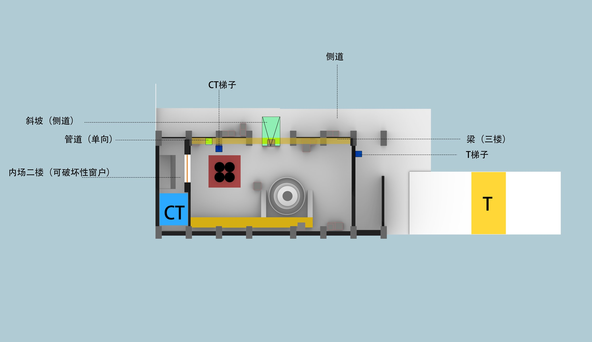
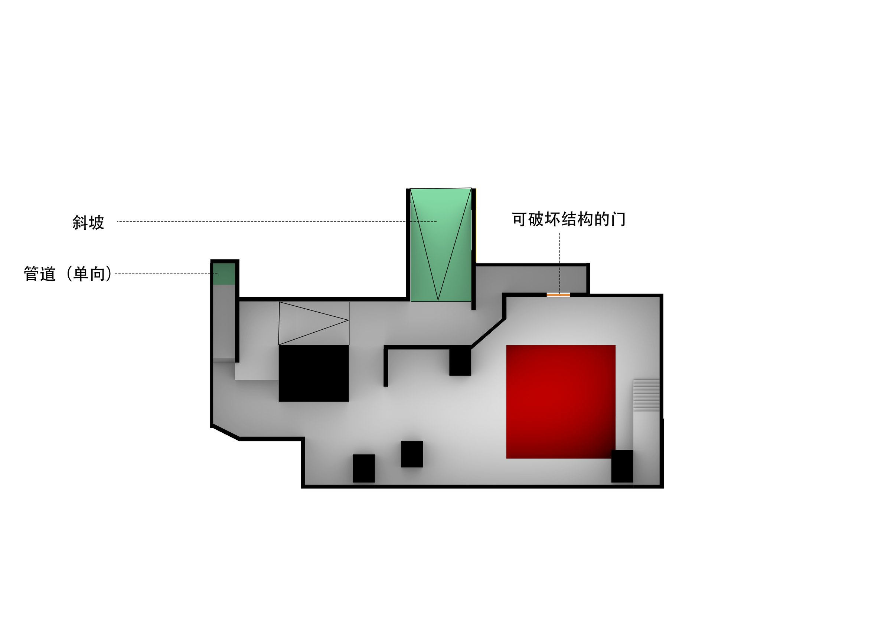
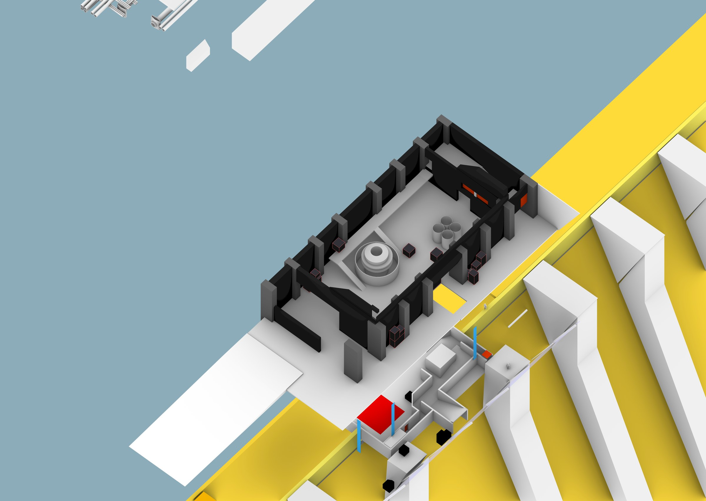
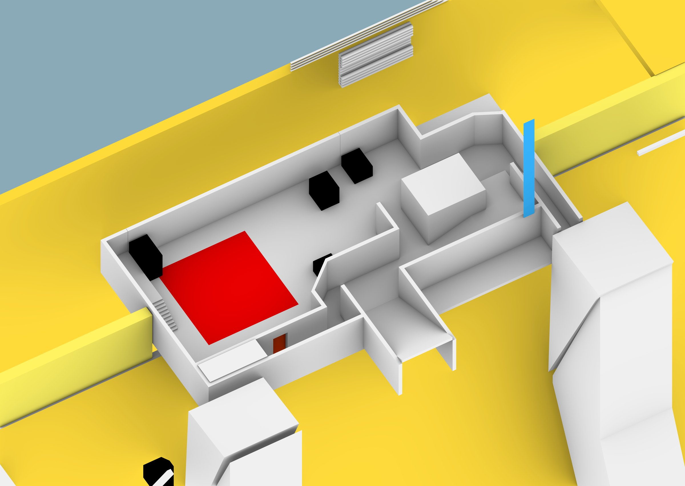
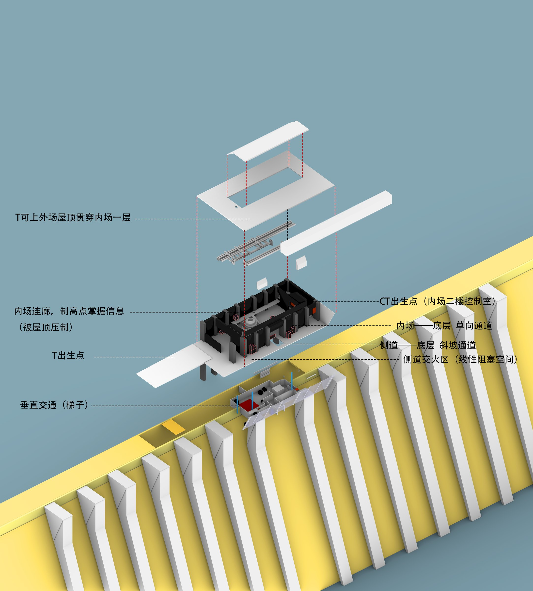

连廊截图
节点 A · 空中控制连廊
中层连廊是全场信息密度最高的位置
连廊位于地面与梁结构之间，是垂直三层的中层。 站在这里可以同时观察到内场主战场和侧道的动向。
为什么这么做 给防守方一个信息支点，但连廊本身暴露、缺少掩体——信息优势必须冒着被打的风险去换。
$ CS 炸弹拆除模式 · 双包点白盒 · 5v5 竞技
以垂直空间关系为核心的双包点关卡。用高低差与垂直交通构建多层次战斗空间， 让玩家在不同高度之间的每一次穿梭，都改变他的视线与位置优势。
与 Borgo 用「新旧空间的水平对比」驱动玩法不同，Dam 把核心变量换成了高度。 整张地图围绕一座大坝展开，A、B 两个包点分别位于不同层级， 通过管道、斜坡等垂直交通连接上下空间。
高度在 FPS 里从来不只是「站得高」——它直接改写视线关系和位置优势。 同时我加入了玻璃、门等可破坏性结构， 让环境本身会在交火中发生变化，进一步动态地影响玩家的视线与路线选择。
高低差与垂直交通。玩家在不同高度之间穿梭与转点，是这张图区别于平面双包点地图的根本。
可破坏结构（玻璃、门）。环境不是静态背景，而是会被交火改变、反过来影响战局的变量。
这张图的剖面比平面更重要——三层结构在垂直方向上互相咬合。



开间方向上则是两层结构：主战场与侧道。 垂直三层与地面两层叠加后，玩家在任何时刻面对的都不是一个平面战场， 而是一个立体的、上下左右都可能有威胁的空间。


高度差
改变视线与位置优势，让站位本身成为决策
垂直交通
增加路线选择与转点方式，换层成为一种战术
环境破坏
动态改变视线与通行，战场随交火实时变化

连廊位于地面与梁结构之间，是垂直三层的中层。 站在这里可以同时观察到内场主战场和侧道的动向。
为什么这么做 给防守方一个信息支点，但连廊本身暴露、缺少掩体——信息优势必须冒着被打的风险去换。
梁结构位于内场最高层，视野最好，但落脚点窄、几乎没有遮蔽。 它是一个典型的「高收益、高风险」站位。
为什么这么做 避免制高点变成无解的狙击位——站得最高的人，也最容易被全场集火。
玻璃与门分布在几条关键视线上。它们开局时提供遮蔽， 但会在交火中被打碎——原本的掩体可能突然失效，原本的死角可能突然贯通。
为什么这么做 玩家不能死记硬背站位，必须根据环境的实时状态重新判断——这让同一回合内也充满变化。
垂直关系带来的主要问题与调整。
垂直多层结构天然会让高处占优。如果没有任何制衡，战斗会退化成「谁先到高层谁赢」，地面层的空间就失去意义。
通过挑檐、窄落脚点与暴露面，让视野越好的位置越缺乏遮蔽——高处的信息优势必须用生存风险来换，三个层级各自都有存在的理由。
这部分留白：上下层转移的时间成本、可破坏结构对节奏的实际影响，需要多轮实测后补充具体数据。
三层垂直动线的走位与环境破坏实测。